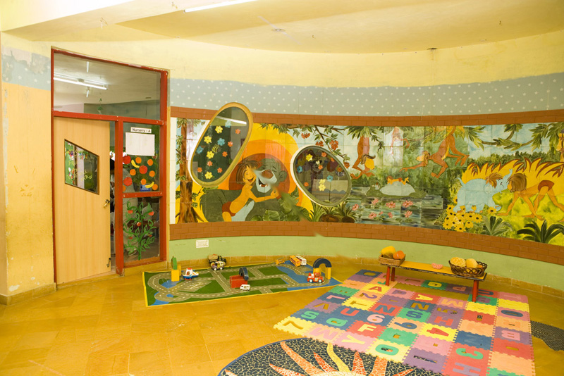

neeraja modi school
Email: nmsjaipur@yahoo.com
Contact: +91-141-2785484 / 85 / 87
Academics
Kindergarten

The spirit and essence of our educational process lies in the comprehensive development of the child.
No advances in academic policies or curriculum have their desired effect unless they are in harmony with the child--unless they are fundamentally acceptable to him or her. We seek to equip the child with both deep and subtle ways of understanding the world and the self.
For a child there is no division between playing and learning; between the things he or she does just for fun and things that are educational.
We constantly strive for our children to come eager to explore and learn. They spend time exploring and understanding their immediate world. Pre-Primary Neerja Modi School supports and encourages this form of spontaneous learning.
Our school comprises of a diligent team of teachers, teacher assistants, teacher supervisors, event organisers, curriculum coordinators and teacher trainers.
OUR INFRASTRUCTURE
The curriculum and methodology is constantly updated to keep up to date with educational reforms and research. Equipment is also updated in order to implement changes in the curriculum.
CONCEPT DEVELOPMENT
Our teaching methodology is based on the undisputed premises that children enjoy learning through play, hands-on activities and interaction with others.
We formulate the teaching of concepts through activities, songs and games and a variety of hands-on experiences through which children can explore and learn about the world around them.
FORMAL WORK PREPARATION
Reading is the foundation for all learning. If a child is successful in reading all subsequent learning is facilitated.
Skilled reading is a complex process that requires the engagement of many parts simultaneously. This process is based on a foundation in following: phonological awareness, knowledge between sounds and letters, as well as visual memory.
MATHEMATICAL CONCEPTS
A wide range of activities are built into the program to provide children with meaningful experiences in problem-solving, number usage and practical application. Our mathematics programs allow for hands-on exploration, active investigation and the use of manipulatives.
FIELD TRIPS
Since children learn best through direct experiences, we organise opportunities for children to learn by seeing, feeling and doing. Through these experiences, children establish their understanding and acquire social, intellectual and physical skills necessary for the development of meaningful concepts. Going to places, seeing and doing are all vital components of an early education program.
We organise field trips such as visits to the fire station, supermarket, and petrol pump for our younger age groups. Field trips such as visits to a home for the blind, an optician, a dentist, and museums are just a sample of the various field trips for our older children.
Field trips differ according to the age, syllabus and maturity level of the students.
Many "in-house" events are also organised. Children of kindergarten as well as neighbouring mainstream schools benefit from our campus programs such as Marine Day, Farm Day, Insect and Reptile Day and more. We have also invited guests such as dhobis, hairdressers, doctors, and more to visit our classes.
MOTOR ACTIVITIES
We provide opportunities for children to develop coordinated skills in a safe and non-threatening environment. By taking part in structured play situations, indoors and outdoors, children are offered a chance to try out new skills and practice familiar ones. Motor activities, woven into the curriculum, teach and reinforce skills such as balance, eye-hand coordination, rhythm and the manual dexterity needed to colour, draw and write. As children gain control over their bodies and movements, their self-esteem and confidence grow.
Through our perceptual motor program, we focus on stimulating the sensory motor system and developing the child’s ability to organise and put messages together. These sessions are important for the development of the nervous system as well as for intellectual development. This program has shown remarkable results and has helped children to achieve accelerated learning, improved coordination and an improved ability to focus.
MUSIC & MOVEMENT & DRAMATICS
Music and movement sessions enhance attention spans, sharpen listening abilities and develop language/vocabulary skills.
CREATIVE ARTS
The visual arts fulfill an essential need in children to explore and make sense of their world. The art of drawing, painting and shaping objects teaches them important new ways of thinking, of creating and communicating with images as well as with words.
We have created a program to accomodate the different sensory modalities through which a child learns. A child may be a visual, auditory or kinesthetic learner. Our program operates in all three modalities allowing each child to achieve his or her maximum potential.